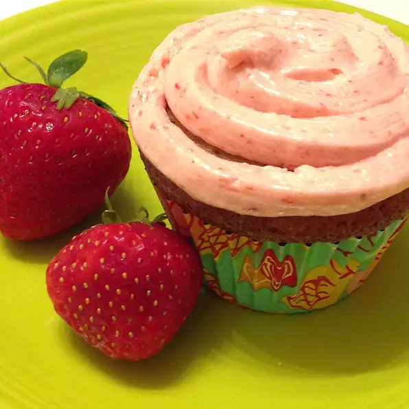

I've been messing around trying to make a perfect strawberry cupcake to go with the Real Strawberry Frosting I developed a couple of years ago. It's been a long road and lots of cupcakes tested and tasted along the way. The trick was NOT using puree as I do when making the frosting. Rather, grinding freeze-dried strawberries into a powder brought this cupcake recipe out of my test kitchen and into my recipe box! I am so pleased with the results!